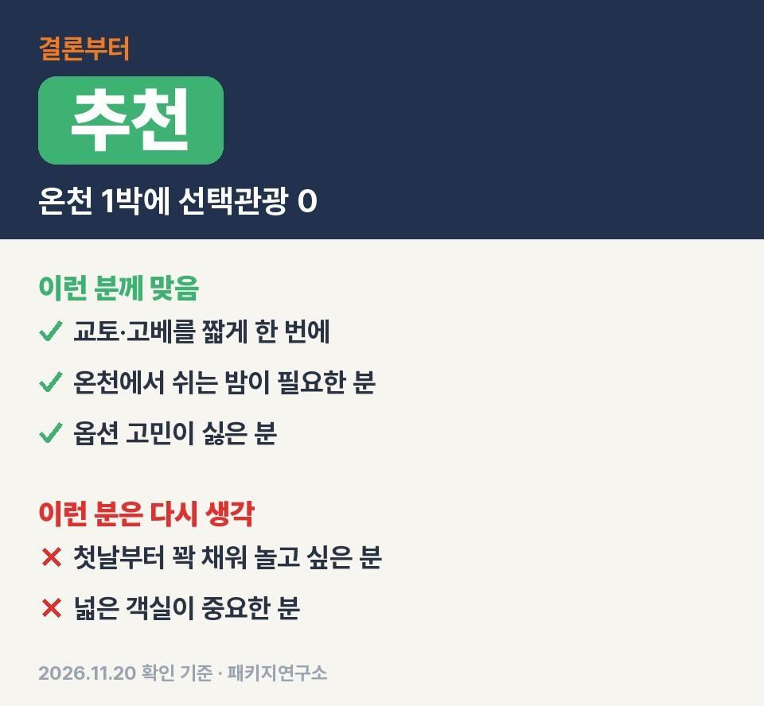
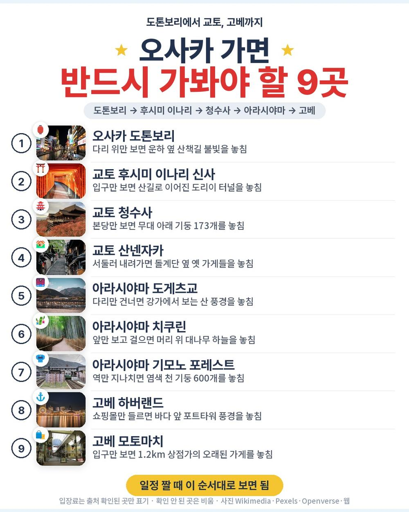
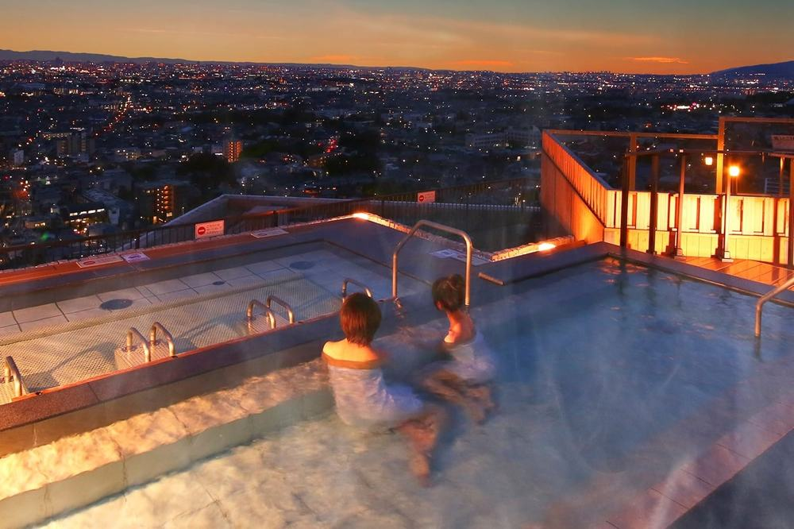
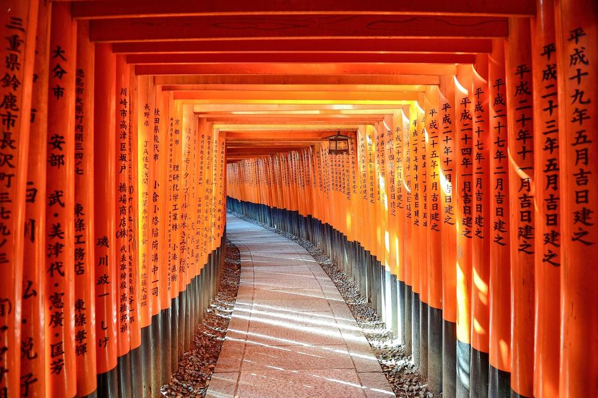
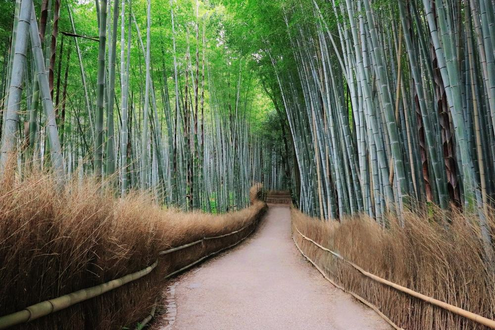

교토 하루를 통째로 쓰고 둘째 밤은 산자락 온천호텔에서 뷔페 저녁에 술까지 무제한으로 묵는 2박 3일임.
다녀온 후기가 아니라 노랑풍선 일정표와 포함·불포함 원문을 한 줄씩 따져 본 글임.
결론 — 추천. 에어서울 직항 왕복, 시내 호텔 1박 + 미노오 온천호텔 1박, 식사 5번, 교토 명소 다섯 곳과 고베까지 74만 9천원 안에 있고 선택관광은 0. 다만 첫날부터 꽉 채워 놀고 싶은 분은 다시 따져 볼 것.

오늘 기준 출발일별 요금 보기
https://naver.me/x1uy4t4E

| 항목 | 내용 |
|---|---|
| 가격 | 1인 749,000원 (성인·소아 같음 · 12월 출발 기준) · 2인 1,498,000원 |
| 여행사 | 노랑풍선 |
| 항공 | 에어서울 직항 (RS381·RS382) · 갈 때 15:20 출발 약 1시간 40분 / 올 때 18:00 출발 19:55 인천 |
| 숙소 | 신사이바시 시내 호텔 1박(트래블로지 예정) + 미노오 온천호텔 1박(미노오 관광 호텔 예정) · 동급 변경 가능 |
| 일정 | 2박 3일 · 식사 5번 · 선택관광 0 · 쇼핑 1회 · 가이드·기사 경비 3,000엔 별도 |
▶ 내 출발일 오늘 기준 요금 확인 (제휴 링크 · 예약 시 수수료를 받으며 가격은 같습니다)
▶ 11월 20일 기준 오사카 패키지 최저 69만 9천원부터 — 출발일별 값 한 화면에: 비교 페이지
| 번호 | 내용 | 한 줄 답 |
|---|---|---|
| 1 | 이 값에 들어 있는 것 | 온천 1박·명소 9곳 |
| 2 | 현장에서 더 낼 돈 | 2인 6,000엔 |
| 3 | 일정과 체력 | 2일차가 제일 걸음 |
| 4 | 자유여행으로 짜면 | 항공값 조회 실패 |
| 5 | 맞는 분 · 안 맞는 분 | 3 대 3 |
직항 왕복과 호텔 두 밤, 식사 5번에 온천호텔 뷔페 저녁 술 무제한까지 한 값으로 묶임.
- 항공: 에어서울 인천–간사이 직항 왕복, 유류할증료·TAX 포함
- 숙소: 1일차 트래블로지 신사이바시, 2일차 오에도 온천 미노오 관광 호텔(원문 「26년 10월 리뉴얼 오픈」)
- 식사: 5번 — 호텔 조식 2, 현지식 점심 2, 온천호텔 석식 뷔페 1
- 관광: 도톤보리, 후시미 이나리 신사, 청수사, 산넨자카·니넨자카, 도게츠교, 치쿠린, 기모노 포레스트, 고베 모자이크·하버랜드·모토마치
- 특전: 110V 어댑터 1인 1개, 온천호텔 스파 가든·라운지 음료 무료

온천호텔 특전은 원문에 「호텔이 변경되면 특전도 변경」 이라고 붙어 있음. 호텔은 출발 이틀 전 확정 안내라서 그때 이름을 한 번 더 보면 됨. 쇼핑은 마지막 날 잡화 면세점 한 번, 40분 정도이고 사는 건 자유임.
꼭 내는 돈은 가이드·기사 경비 1인 3,000엔이고 첫날 도톤보리 저녁값이 더해짐.
| 항목 | 금액 | 필수/선택 | 비고 |
|---|---|---|---|
| 가이드·기사 경비 | 6,000엔 (약 5만원) | 필수 | 1인 3,000엔 · 1엔 약 8.36원(11/19) |
| 선택관광 | 0원 | — | 없음 |
| 1일차 저녁 | 직접 | 선택 | 도톤보리 자유식 |
| 합계 (2인 필수분) | 6,000엔 (약 5만원) | 상품가 2인 1,498,000원 별도 |
- 가이드 경비는 엔화 현금으로 준비해 두면 편함
- 3인 객실은 요청은 되지만 확정은 아니라고 원문에 적혀 있음
걷는 양이 몰리는 날은 교토 세 곳과 아라시야마를 도는 2일차 하루임.
| 일차 | 가는 곳 | 버스 | 걷기 | 점심 · 저녁 |
|---|---|---|---|---|
| DAY 1 | 인천 15:20 → 간사이 17:00 → 도톤보리 → 신사이바시 호텔 | 약 1시간 30분 | 적음 | 없음 · 자유식 |
| DAY 2 | 후시미 이나리 · 청수사 · 산넨자카 → 아라시야마 → 미노오 온천호텔 | 약 3시간 | 많음 | 현지식 · 호텔 뷔페 |
| DAY 3 | 고베 모자이크·하버랜드·모토마치 → 오사카성 차창 → 면세점 → 간사이 18:00 | 약 2시간 30분 | 보통 | 현지식 · 없음 |
- 후시미 이나리 도리이 길은 산길 오르막이 이어짐
- 산넨자카·니넨자카는 돌계단 언덕이라 발밑을 보며 걷는 게 좋음
- 오사카성은 내리지 않고 버스 창밖으로 지나며 봄

첫날이 오후 비행기라 아침 일찍 공항 갈 일이 없는 대신 그날은 저녁 한 끼가 전부임. 무릎이 불편하면 도리이 길은 앞부분만 걷겠다고 가이드에게 미리 말해 두면 됨.
항공값을 오늘 조회하지 못해 합계는 안 냈고 직접 짤 때 따로 챙길 칸만 적음.
| 항목 | 금액 | 근거 |
|---|---|---|
| 인천–간사이 직항 왕복 | 확인 못 함 | 2026-11-20 마이리얼트립 조회 실패 — 숫자를 지어내지 않음 |
| 시내 호텔 1박 + 온천호텔 1박 | 확인 못 함 | 날짜·호텔마다 다름 |
| 식사 | 따로 | 패키지는 5번 포함 |
| 공항 이동 | 따로 | 패키지는 전용 버스 포함 |
| 교토·아라시야마·고베 이동 | 따로 | 패키지는 전용 버스 |
| 여행자보험 | 따로 | 패키지는 포함 |
| 가이드 | — | 자유여행은 없음 |
- 교토 세 곳과 아라시야마, 미노오 온천을 하루에 대중교통으로 잇기는 빠듯함
- 온천호텔은 산자락이라 오가는 길을 따로 알아볼 일이 생김
- 실값은 날짜를 정한 뒤 견줘 보는 게 정확함

걸리는 건 짧은 첫날과 좁다는 말이 나온 시내 호텔이고 누구에게만 문제인지 분명함.
| 맞는 분 | 안 맞는 분 |
|---|---|
| 교토·고베를 짧게 한 번에 보려는 분 | 첫날부터 꽉 채워 놀고 싶은 분 |
| 온천에서 쉬는 밤이 꼭 필요한 분 | 넓은 객실이 중요한 분 |
| 현지 옵션 고민이 싫은 분 | 오사카성 안까지 들어가 보고 싶은 분 |
이 상품 게시판엔 후기가 38개 있고 평균은 4.4점임. 둘째 날 온천호텔 노천탕이 좋았다는 글이 세 건이고, 첫날 시내 호텔 방이 좁았다는 글도 두 건 보임. 방보다 온천 하룻밤을 보고 고르는 상품이라고 보면 기대가 맞음.
Q. 오사카 패키지 2박 3일 이 상품은 얼마인가요?
A. 12월 출발 기준 1인 74만 9천원, 2인 149만 8천원. 출발일마다 값이 달라서 날짜별로 확인해야 함.
Q. 선택관광이나 쇼핑이 있나요?
A. 선택관광은 없음. 쇼핑은 마지막 날 잡화 면세점 한 번, 40분 정도이고 구매는 자유임.
Q. 가이드 경비는 따로 내나요?
A. 냄. 1인 3,000엔을 현지에서 냄. 성인·소아 같은 금액임.
교토를 걸어서 하루 다 보고 그 밤을 온천호텔에서 쉰다는 점이 이 값의 이유임.
짧은 일정으로 교토·고베를 한 번에 보려는 분께 특히 잘 맞음.
출발일에 따라 값이 달라서 가시려는 날짜 요금부터 확인하시면 됨.
오늘 기준 출발일별 요금 보기
https://naver.me/x1uy4t4E
이 글에는 네이버 제휴 링크가 포함되어 있으며, 링크를 통해 예약하시면 일정 수수료를 받습니다. 가격은 동일합니다. 가격과 구성은 2026년 11월 20일 확인 기준이며 출발일에 따라 달라질 수 있습니다.
▶ 이 상품, 영상으로 보기 (유튜브)
▶ 오사카 패키지 오늘 값 나란히 비교
▶ 같은 목적지 다른 여행사 패키지, 쇼핑·선택관광·가이드 경비까지 비교: pkg-lab.com

.jpg){kind=link}